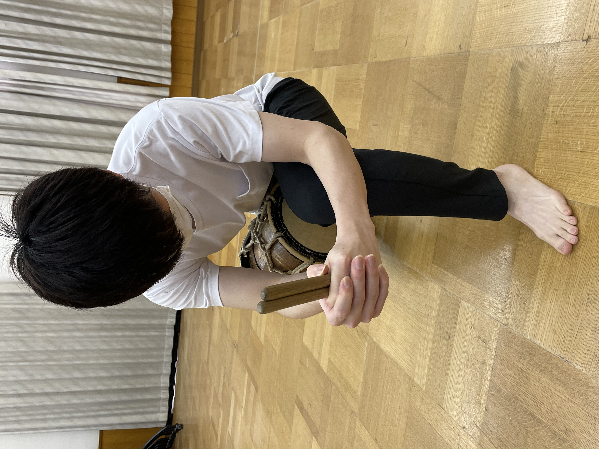
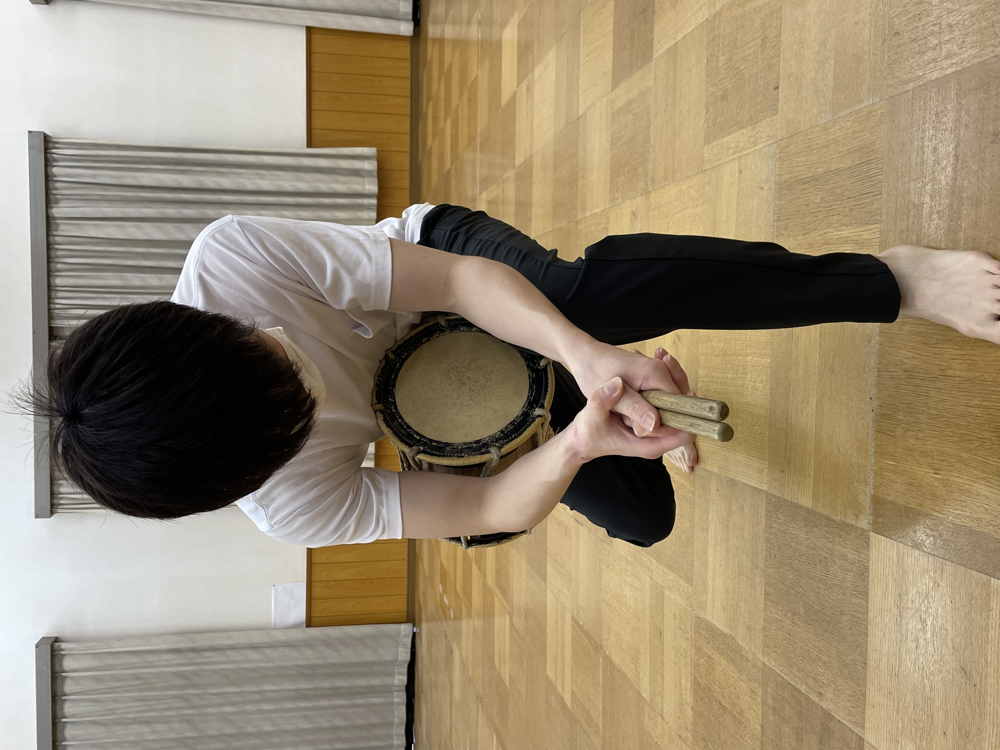
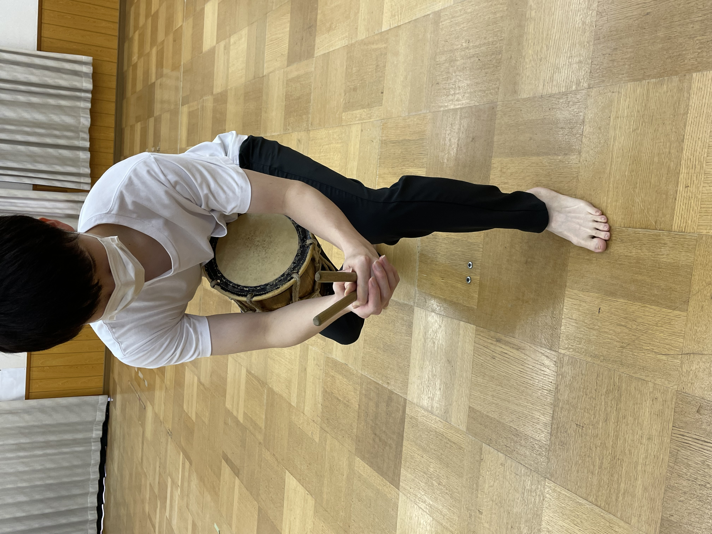
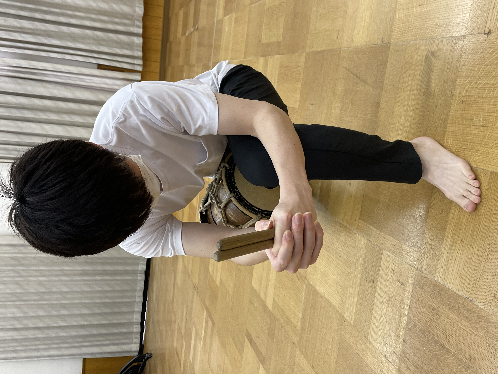
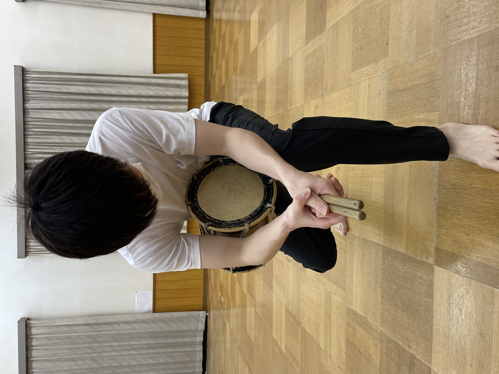
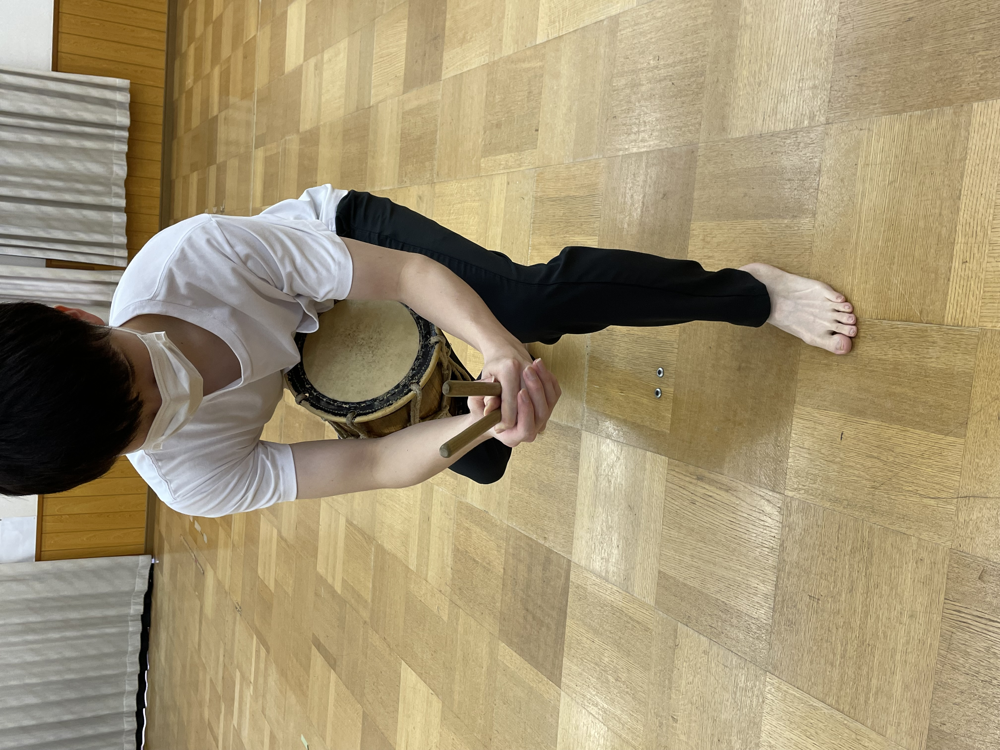

良い例
良いバチの持ち方
バチとバチの間にすき間がなく、バチの先をななめ上に向けている。
悪い例
悪いバチの持ち方
手首が下がっており、バチの先がななめ上を向いていない。
バチとバチの間にすき間が空いている。
この画面では正しい構え方を良い例、悪い例の動画を用いて解説します。 まずは、良い例、悪い例の動画を見てちがいを理解しましょう。写真では、バチの持ち方について良い例と2種類の悪い例の写真を用いて解説しています。
良い例
良いバチの持ち方
バチとバチの間にすき間がなく、バチの先をななめ上に向けている。
悪い例
悪いバチの持ち方
手首が下がっており、バチの先がななめ上を向いていない。
バチとバチの間にすき間が空いている。
注目ポイント
3人そろえて構えている点に注目しましょう。写真の良いバチの持ち方も参考にしてください。